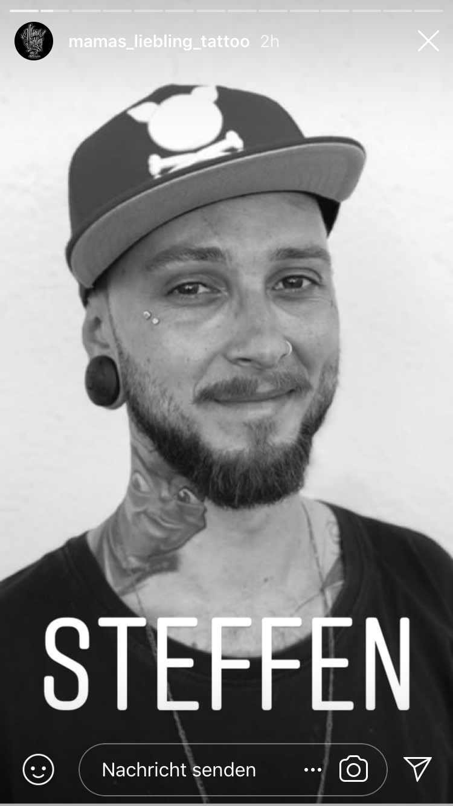

Steffen
Steffen ist Inhaber und Tätowierer bei Mamas Liebling. Darüber hinaus ist er einer der treibenden kreativen Kräfte bei Mamas Liebling und ist somit vom Aufkleber über T Shirts bis hin zu großen Prints oder Leinwänden überall maßgeblich beteiligt.
folgt uns: